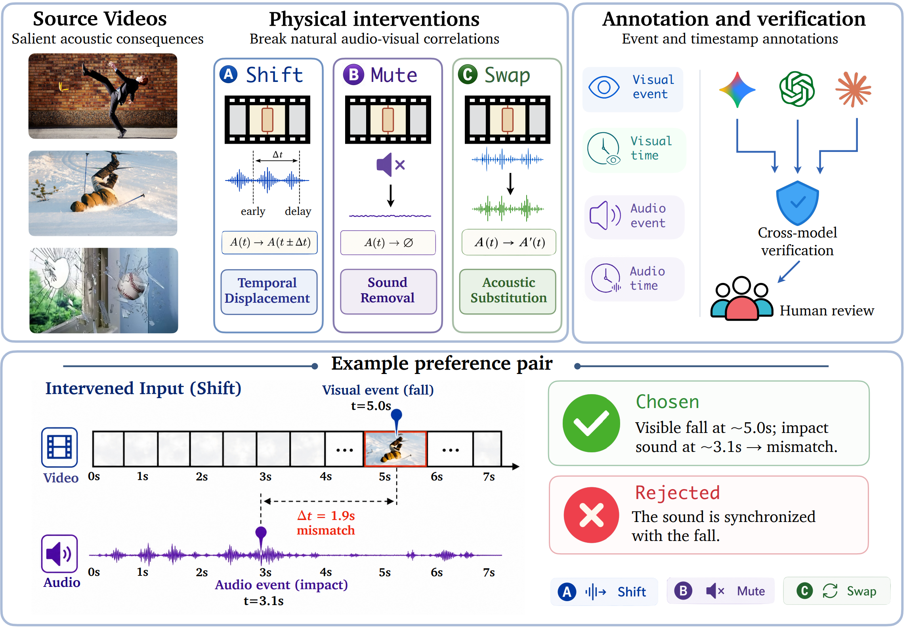
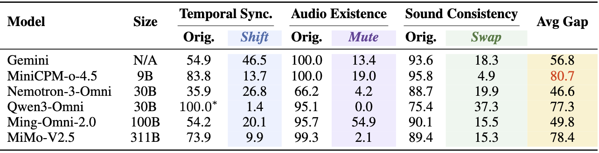
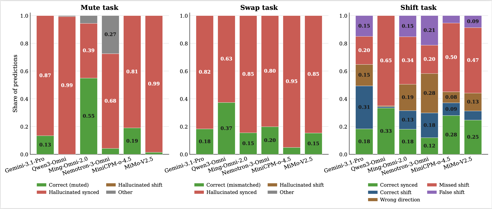
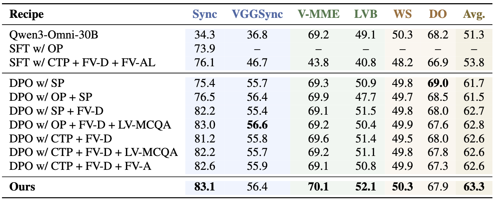

Despite rapid progress in video-capable MLLMs, we find that their apparent audio understanding in videos is often vision-driven: models rely on visual cues to infer or hallucinate acoustic information, rather than verifying the audio stream. This issue appears across both state-of-the-art open-source omni models and leading closed-source models from providers such as Google and OpenAI. We characterize this failure mode as an audio-visual Clever Hans effect, in which models appear (falsely) audio-grounded, but actually exploit visual-acoustic correlations without verifying whether the audio and visual streams are truly aligned. To systematically study this behavior, we introduce Thud, an intervention-driven probing framework based on three counterfactual audio edits: Shift, which tests temporal synchronization; Mute, which tests sound existence; and Swap, which tests audio-visual consistency. Beyond diagnosis, we further study a two-stage alignment recipe: intervention-derived preference pairs teach audio verification, while event-level general video preferences regularize the model against over-specialization. Our best 10K-sample recipe improves average performance across the three intervention dimensions by 28 percentage points, while slightly improving performance on general video and audio-visual QA benchmarks.
THUD keeps the visual event fixed but changes the audio condition. If a model truly verifies sound, its answer should change with the audio track. Instead, many video-capable multimodal models still describe the sound implied by the visuals, revealing missed temporal shifts, hallucinated audio, and visual-biased predictions.
Representative THUD failures. Shift tests temporal synchronization, Mute tests audio existence, and Swap tests audio-visual consistency.
THUD converts naturally correlated videos into counterfactual probes. We annotate visual and acoustic events, then apply Shift, Mute, and Swap interventions to test whether models verify timing, sound presence, and audio-visual consistency rather than relying on visual priors.

THUD pipeline. Event-time annotation enables controlled interventions that expose visual-semantic shortcuts.
We compare each model on original videos and counterfactual audio interventions. Large drops under Shift, Mute, and Swap reveal shortcut reliance.

Diagnostic accuracy. Models appear strong on natural videos but often fail when audio-visual correlations are broken.
The failures are systematic: models often assume the audio is synchronized and visually plausible, even when it is muted, swapped, or shifted.

Prediction breakdown. Errors concentrate around hallucinated synchronized audio rather than random mistakes.
We train Qwen3-Omni with intervention-derived preferences and general video data. Our final recipe improves temporal grounding while preserving general video capability.

Alignment recipe comparison. Preference alignment mitigates temporal shortcut reliance without an alignment tax.
We are currently organizing the Training data and Thud evaluation data for public release. The dataset will be made available soon. Please check back for updates.
@misc{wen2026whenvisionspeaksforsound, title={When Vision Speaks for Sound}, author={Xiaofei Wen and Wenjie Jacky Mo and Xingyu Fu and Rui Cai and Tinghui Zhu and Wendi Li and Yanan Xie and Muhao Chen and Peng Qi}, year={2026}, archivePrefix={arXiv}, url={To Add Soon}, }